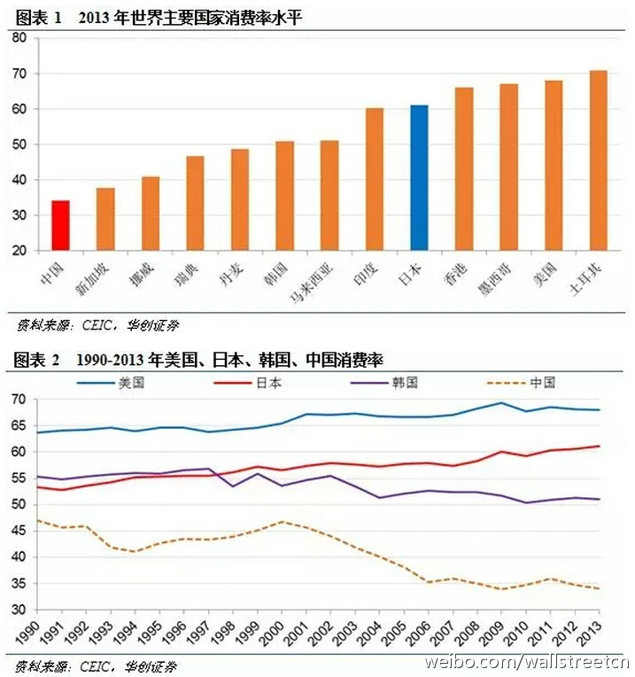
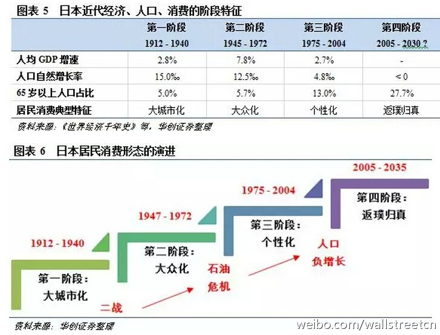
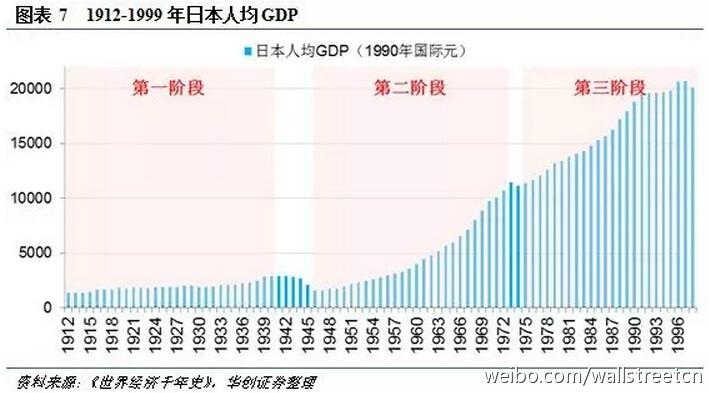
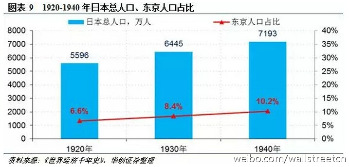
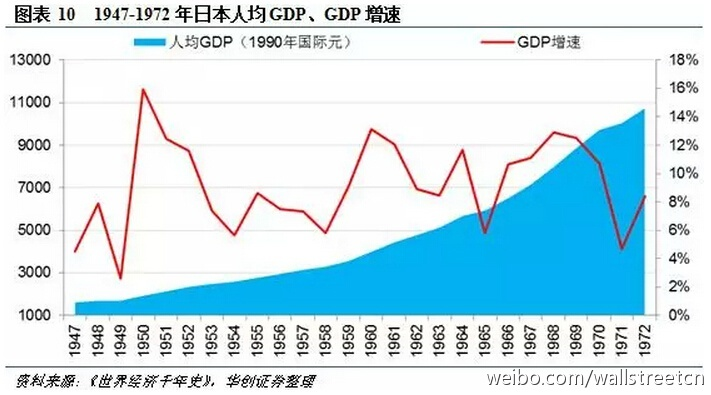
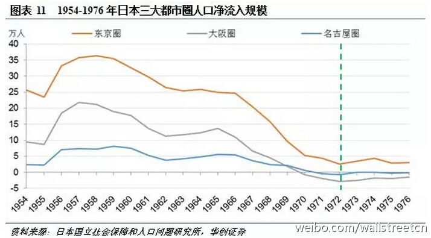
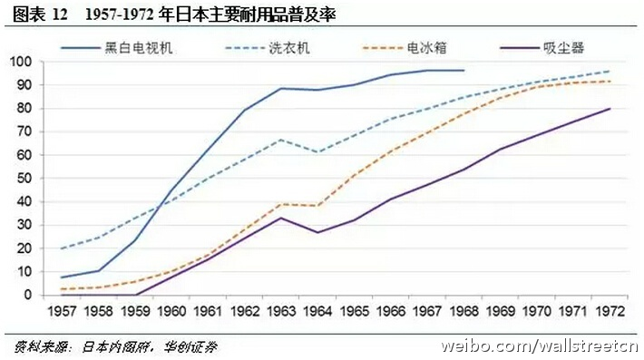

参考美国和日本，大致可以看出未来十年中国的消费趋势。@华尔街见闻APP:【从大众到个性：日本消费的百年变迁——新消费系列报告二】 收入和人口是消费增长的两大核心驱动力。纵观各国消费史，在受到居民收入水平、人口结构影响的同时，消费水平和结构演进与文化、信贷条件等影响微观主体消费行为因素密切相关。本篇主要探究日本消费的演变历程。详见：从大众到个性：日本消费的百年变迁——新消费系列报告二 
 从大众到个性：日本消费的百年变迁——新消费系列报告二
从大众到个性：日本消费的百年变迁——新消费系列报告二